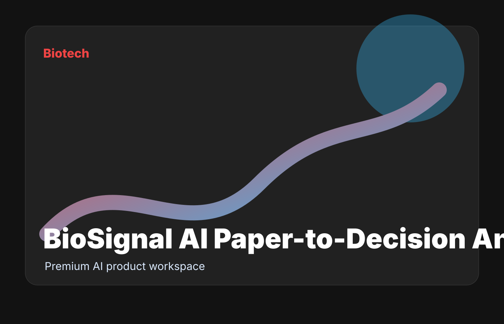

Biotech
BioSignal AI Paper-to-Decision Analyst
$1,500/month diligence workspacePremium workflow
A premium AI workspace for slow paper triage, unclear translational risk, and scattered experiment notes.
94quality score5workflow modules

Biotech
Premium workflow